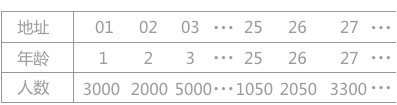
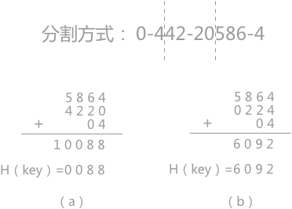

哈希表（散列表）详解（包含哈希表处理冲突的方法）
前面介绍了静态查找表以及动态查找表中的一些查找方法，其查找的过程都无法避免同查找表中的数据进行比较，查找算法的效率很大程度取决于同表中数据的查找次数。
而本节所介绍的哈希表可以通过关键字直接找到数据的存储位置，不需要进行任何的比较，其查找的效率相较于前面所介绍的查找算法是更高的。
哈希表的建立同函数类似，把函数中的 x 用查找记录时使用的关键字来代替，然后将关键字的值带入一个精心设计的公式中，就可以求出一个值，用这个值来表示记录存储的哈希地址。即：
在构建哈希表时，最重要的是哈希函数的设计。例如设计电话簿案例中的哈希函数为：每个名字的姓的首字母的 ASCII 值即为对应的电话号码的存储位置。这时会发现，张三和赵六两个关键字的姓的首字母都是 Z ，最终求出的电话号码的存储位置相同，这种现象称为冲突。在设计哈希函数时，要尽量地避免冲突现象的发生。
直接定址法：其哈希函数为一次函数，即以下两种形式：
例如有一个从 1 岁到 100 岁的人口数字统计表，如表 1 所示：
数字分析法:如果关键字由多位字符或者数字组成，就可以考虑抽取其中的 2 位或者多位作为该关键字对应的哈希地址，在取法上尽量选择变化较多的位，避免冲突发生。
例如表 2 中列举的是一部分关键字，每个关键字都是有 8 位十进制数组成：

表 2
通过分析关键字的构成，很明显可以看到关键字的第 1 位和第 2 位都是固定不变的，而第 3 位不是数字 3 就是 4，最后一位只可能取 2、7 和 5，只有中间的 4 位其取值近似随机，所以为了避免冲突，可以从 4 位中任意选取 2 位作为其哈希地址。
平方取中法是对关键字做平方操作，取中间得几位作为哈希地址。此方法也是比较常用的构造哈希函数的方法。
例如关键字序列为
折叠法是将关键字分割成位数相同的几部分（最后一部分的位数可以不同），然后取这几部分的叠加和（舍去进位）作为哈希地址。此方法适合关键字位数较多的情况。
例如，在图书馆中图书都是以一个 10 位的十进制数字为关键字进行编号的，若对其查找表建立哈希表时，就可以使用折叠法。
若某书的编号为：0-442-20586-4，分割方式如图 1 中所示，在对其进行折叠时有两种方式：一种是移位折叠，另一种是间界折叠：
除留余数法：若已知整个哈希表的最大长度 m，可以取一个不大于 m 的数 p，然后对该关键字 key 做取余运算，即：
通常用的处理冲突的方法有以下几种：
而本节所介绍的哈希表可以通过关键字直接找到数据的存储位置，不需要进行任何的比较，其查找的效率相较于前面所介绍的查找算法是更高的。
哈希表的构建
在初中的数学课本中学习过函数的相关知识，给定一个 x，通过一个数学公式，只需要将 x 的值带入公式就可以求出一个新的值 y。哈希表的建立同函数类似，把函数中的 x 用查找记录时使用的关键字来代替，然后将关键字的值带入一个精心设计的公式中，就可以求出一个值，用这个值来表示记录存储的哈希地址。即：
数据的哈希地址=f（关键字的值）
例如，这里有一个电话簿（查找表），电话簿中有 4 个人的联系方式：哈希地址只是表示在查找表中的存储位置，而不是实际的物理存储位置。f（）是一个函数，通过这个函数可以快速求出该关键字对应的的数据的哈希地址，称之为“哈希函数”。
张三 13912345678
李四 15823457890
王五 13409872338
赵六 13805834722
假如想查找李四的电话号码，对于一般的查找方式最先想到的是从头遍历，一一比较。而如果将电话簿构建成一张哈希表，可以直接通过名字“李四”直接找到电话号码在表中的位置。李四 15823457890
王五 13409872338
赵六 13805834722
在构建哈希表时，最重要的是哈希函数的设计。例如设计电话簿案例中的哈希函数为：每个名字的姓的首字母的 ASCII 值即为对应的电话号码的存储位置。这时会发现，张三和赵六两个关键字的姓的首字母都是 Z ，最终求出的电话号码的存储位置相同，这种现象称为冲突。在设计哈希函数时，要尽量地避免冲突现象的发生。
对于哈希表而言，冲突只能尽可能地少，无法完全避免。
哈希函数的构造
常用的哈希函数的构造方法有 6 种：直接定址法、数字分析法、平方取中法、折叠法、除留余数法和随机数法。直接定址法：其哈希函数为一次函数，即以下两种形式：
H（key）= key 或者 H（key）=a * key + b
其中 H（key）表示关键字为 key 对应的哈希地址，a 和 b 都为常数。例如有一个从 1 岁到 100 岁的人口数字统计表，如表 1 所示：

表 1 人口统计表
假设其哈希函数为第一种形式，其关键字的值表示最终的存储位置。若需要查找年龄为 25 岁的人口数量，将年龄 25 带入哈希函数中，直接求得其对应的哈希地址为 25（求得的哈希地址表示该记录的位置在查找表的第 25 位）。表 1 人口统计表
数字分析法:如果关键字由多位字符或者数字组成，就可以考虑抽取其中的 2 位或者多位作为该关键字对应的哈希地址，在取法上尽量选择变化较多的位，避免冲突发生。
例如表 2 中列举的是一部分关键字，每个关键字都是有 8 位十进制数组成：
表 2
平方取中法是对关键字做平方操作，取中间得几位作为哈希地址。此方法也是比较常用的构造哈希函数的方法。
例如关键字序列为
{421，423，436}，对各个关键字进行平方后的结果为{177241，178929，190096}，则可以取中间的两位{72，89，00}作为其哈希地址。折叠法是将关键字分割成位数相同的几部分（最后一部分的位数可以不同），然后取这几部分的叠加和（舍去进位）作为哈希地址。此方法适合关键字位数较多的情况。
例如，在图书馆中图书都是以一个 10 位的十进制数字为关键字进行编号的，若对其查找表建立哈希表时，就可以使用折叠法。
若某书的编号为：0-442-20586-4，分割方式如图 1 中所示，在对其进行折叠时有两种方式：一种是移位折叠，另一种是间界折叠：
- 移位折叠是将分割后的每一小部分，按照其最低位进行对齐，然后相加，如图 1（a）；
- 间界折叠是从一端向另一端沿分割线来回折叠，如图 1（b）。

图 1 移位折叠和间界折叠
图 1 移位折叠和间界折叠
H（key）= key % p。随机数法：是取关键字的一个随机函数值作为它的哈希地址，即：在此方法中，对于 p 的取值非常重要，由经验得知 p 可以为不大于 m 的质数或者不包含小于 20 的质因数的合数。
H（key）=random（key），此方法适用于关键字长度不等的情况。
注意：这里的随机函数其实是伪随机函数，随机函数是即使每次给定的 key 相同，但是 H（key）都是不同；而伪随机函数正好相反，每个 key 都对应的是固定的 H（key）。
如此多的构建哈希函数的方法，在选择的时候，需要根据实际的查找表的情况采取适当的方法。通常考虑的因素有以下几方面：
- 关键字的长度。如果长度不等，就选用随机数法。如果关键字位数较多，就选用折叠法或者数字分析法；反之如果位数较短，可以考虑平方取中法；
- 哈希表的大小。如果大小已知，可以选用除留余数法；
- 关键字的分布情况；
- 查找表的查找频率；
- 计算哈希函数所需的时间（包括硬件指令的因素）
处理冲突的方法
对于哈希表的建立，需要选取合适的哈希函数，但是对于无法避免的冲突，需要采取适当的措施去处理。通常用的处理冲突的方法有以下几种：
-
开放定址法 H（key）=（H（key）+ d）MOD m（其中 m 为哈希表的表长，d 为一个增量） 当得出的哈希地址产生冲突时，选取以下 3 种方法中的一种获取 d 的值，然后继续计算，直到计算出的哈希地址不在冲突为止，这 3 种方法为：
- 线性探测法：d=1，2，3，…，m-1
- 二次探测法：d=12，-12，22，-22，32，…
- 伪随机数探测法：d=伪随机数
 图 2 开放定址法注释：在线性探测法中，当遇到冲突时，从发生冲突位置起，每次 +1，向右探测，直到有空闲的位置为止；二次探测法中，从发生冲突的位置起，按照 +12，-12，+22，…如此探测，直到有空闲的位置；伪随机探测，每次加上一个随机数，直到探测到空闲位置结束。
图 2 开放定址法注释：在线性探测法中，当遇到冲突时，从发生冲突位置起，每次 +1，向右探测，直到有空闲的位置为止；二次探测法中，从发生冲突的位置起，按照 +12，-12，+22，…如此探测，直到有空闲的位置；伪随机探测，每次加上一个随机数，直到探测到空闲位置结束。 -
再哈希法
当通过哈希函数求得的哈希地址同其他关键字产生冲突时，使用另一个哈希函数计算，直到冲突不再发生。 -
链地址法
将所有产生冲突的关键字所对应的数据全部存储在同一个线性链表中。例如有一组关键字为{19,14,23,01,68,20,84,27,55,11,10,79}，其哈希函数为：H(key)=key MOD 13，使用链地址法所构建的哈希表如图 3 所示：

图 3 链地址法构建的哈希表 -
建立一个公共溢出区
建立两张表，一张为基本表，另一张为溢出表。基本表存储没有发生冲突的数据，当关键字由哈希函数生成的哈希地址产生冲突时，就将数据填入溢出表。
总结
本节主要介绍了哈希表的构造及其在构造过程中对产生的冲突进行处理的方法。在选择具体使用哪种方法时，要根据查找表的实际情况具体问题具体分析。哈希表实现查找操作的具体实现下节有详细介绍。
关注公众号「站长严长生」，在手机上阅读所有教程，随时随地都能学习。内含一款搜索神器，免费下载全网书籍和视频。

微信扫码关注公众号